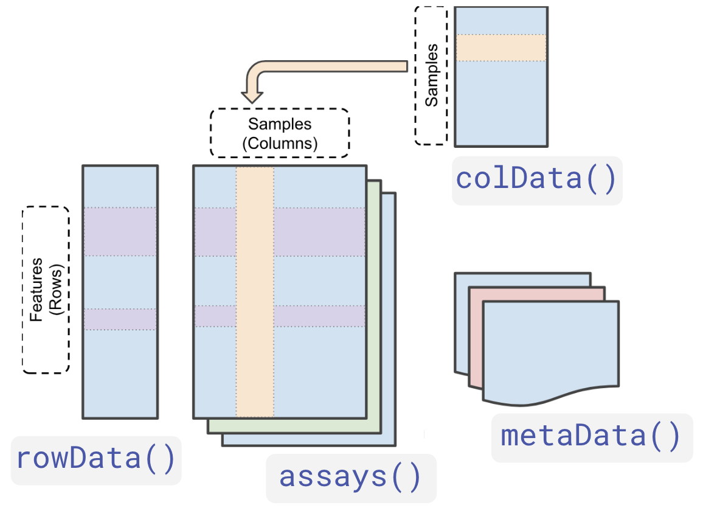
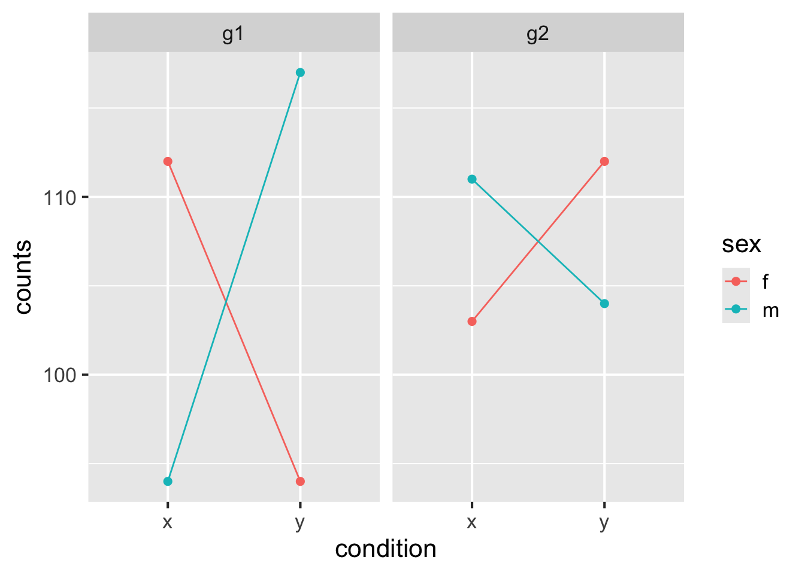
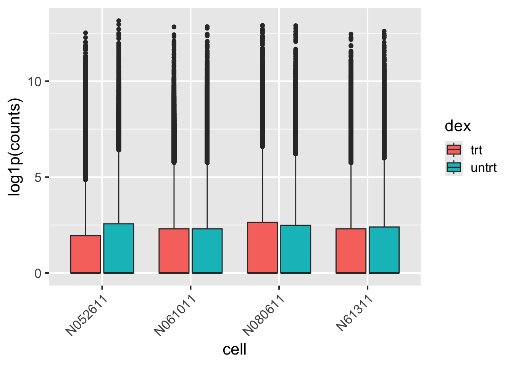
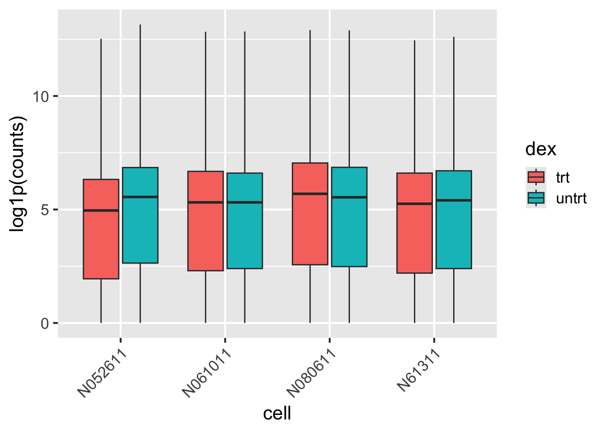

Tidyomics Workshop: Genomics Analysis
Notes from Mike
- take moments to get the class in sync. “everyone subset the object to contain only XXX samples/features”
The Outline
- What is Bioconductor
- Brief intro to S4
- S4 is one of the many frameworks for object-oriented programming in R.
- S4 is the most common framework used in Bioconductor.
- S4 provides a way to define formal classes for generic methods.
- There are 2 types of packages you may find in Bioconductor:
- Software Packages: These packages provide data structures and analysis tools for biological data.
- Data Packages: These packages provide curated datasets for use in analysis.
- Why
SummarizedExperiment(SE)- SE has become the de facto standard in Bioconductor for storing matrix-like data.
- SE provides a compressed format for organizing some outer product of two variables. The most typical being features (rows) and samples (columns).
- SE provides additional metadata annotations for both rows and columns, allowing for more complex data structures.
- Brief intro to S4
- What is
tidyomics- Brief background on
tidyverse- The
tidyverseis a collection of R packages designed for data science, providing a consistent and user-friendly interface for data manipulation, visualization, and analysis. - Most common packages include
dplyr,ggplot2, andtidyr.
- The
- Motivation for
tidyomics
- Brief background on
- Using
tidyomicsfor XYZ Dataset- Basics of using
tidySEtidySEis a package that provides a tidyverse interface for manipulatingSummarizedExperimentobjects.- It allows you to use
dplyrfunctions onSummarizedExperimentobjects, making it easier to work with complex genomic data.- It also implements extensions for more than just
dplyrfunctions, such asggplot2andtidyr.
- It also implements extensions for more than just
- implementation may vary depending on extended classes. Note difference between
tidySEvstidySCE. - include links to zulip channels/githubs for development of new types such as
tidySpacialExperimentandtidySCE.- At some point introduce
plyxpas a complementary package totidySE??plyxponly reimaginesdplyrsyntax for SE objects.
- At some point introduce
- Basics of using
Introduction
Welcome to the Tidyomics workshop! We will be exploring how to use tidyomics to perform common operations for analysis and visualization of genomics data.
Before we dive into the details, we will first talk about Bioconductor, the tidyverse and its connection to the tidyomics project.
What is Bioconductor?
Bioconductor is an open-source project that provides tools for the analysis and comprehension of high-throughput genomic data.
Bioconductor hosts many R packages that will generally fall into two categories:
- Software Packages: These packages provide data structures and analysis tools for biological data.
- Data Packages: These packages provide curated datasets for use in analysis.
The S4 System
S4 is one of the many frameworks for object-oriented (OO) programming in R. It is the most common framework used in Bioconductor.
S4 is admittedly more complex than R’s simplest OO system S3. The main advantages of S4 over S3 are:
- standard generics with multiple dispatch
- formal classes with enforced type checking / validation
- Classes with multiple inheritance
S4 provides a way to define formal classes for generic methods, allowing for more complex data structures and methods.
The S4 System: API Best Practice
The structure of an S4 object is defined by its slots (or attributes). While you can use the @ operator to access these slots, it is not recommended.
Instead, you should use the associated accessor functions for these slots, which are typically exported with the package.
At Bioconductor, the internal structure of the S4 object is subject to change, and thus the @ operator is not considered a stable way to access data.
The S4 System: SummarizedExperiment (SE)
The SummarizedExperiment (SE) class is a powerful and popular data structure in Bioconductor, and parallels the anndata object in Python.
At its core, the SE stores matrix-like data in the form of “assays”.
The SE class has become the de facto standard in Bioconductor for storing matrix-like data, and is used by many packages.
important
SE is widely used, but its functionality stems from other Bioconductor packages. A notable mention is S4Vectors:
- provides a way to indicate your S4 object is “vector-like” (with the
Vectorvirtual class) even if the underlying storage is not a vector. - provides a notation of size and subset generics.
- provides a DFrame object. Like a data.frame, but columns can be any object inheriting from
Vector(e.g.GRanges,Rle, etc.).
What is the tidyverse?
The tidyverse is a collection of R packages that specialize in providing users with consistant APIs for handeling their data. A non-exhaustive list of common tidyverse packages include dplyr, tidyr, and ggplot2. Each tidyverse package tends to focus on solving one problem and will offer a set of consistent APIs for their use cases.
What is tidyomics?
Like the tidyverse, the tidyomics project aims to bring the philosolpy of the tidyverse to the Omics focused packages within Bioconductor.
- https://github.com/tidyomics
- Announcement paper
#tidiness_in_biocchannel in thecommunity-biocZulip

A brief overview of tidyomics in practice
Like the tidyverse, tidyomics hosts many packages, and all of them aim to bring some “tidyverse” functionality to a Bioconductor package.
For example, tidySummarizedExperiment defines methods from dplyr, tidyr, and ggplot2 for the SummarizedExperiment class, allowing users to think about their SummarizedExperiment classes as a “long-form data.frame”.
Alternatively, some tidyomics packages will opt to only extend a niche part of the tidyverse. Such is the case for plyranges and plyxp, which focus on defining methods for dplyr for the GenomicsRanges and SummarizedExperiment packages respectively.
What is “Tidy” Data?

- One row per observation, one column per variable.
- Genomic regions (BED) already in this format.
- Matrices and annotated matrices are not.
SummarizedExperiments
library(SummarizedExperiment)Warning: package 'GenomeInfoDb' was built under R version 4.5.1set.seed(123) # some random count datacounts <- matrix(
rpois(16, lambda=100), ncol=4,
dimnames=list(c("g1","g2","g3","g4"),
c("s1","s2","s3","s4"))
)
counts s1 s2 s3 s4
g1 94 117 112 94
g2 111 104 103 112
g3 83 87 104 108
g4 101 82 101 99Row data and column data
metadata about genes (rows)
genes <- DataFrame(
id = c("g1","g2","g3","g4"),
symbol = c("ABC","DEF","GHI","JKL")
)
genesDataFrame with 4 rows and 2 columns
id symbol
<character> <character>
1 g1 ABC
2 g2 DEF
3 g3 GHI
4 g4 JKLmetadata about samples (columns)
samples <- DataFrame(
sample = c("s1","s2","s3","s4"),
condition = c("x","y","x","y"),
sex = c("m","m","f","f")
)
samplesDataFrame with 4 rows and 3 columns
sample condition sex
<character> <character> <character>
1 s1 x m
2 s2 y m
3 s3 x f
4 s4 y fAssembled object
se <- SummarizedExperiment(
assays = list(counts = counts),
rowData = genes,
colData = samples,
metadata = list(organism="Hsapiens")
)
seclass: SummarizedExperiment
dim: 4 4
metadata(1): organism
assays(1): counts
rownames(4): g1 g2 g3 g4
rowData names(2): id symbol
colnames(4): s1 s2 s3 s4
colData names(3): sample condition sexDeals with bookkeeping issues
Reordering columns propagates to assay and colData:
se2 <- se[,c(1,3,2,4)]
assay(se2, "counts") s1 s3 s2 s4
g1 94 112 117 94
g2 111 103 104 112
g3 83 104 87 108
g4 101 101 82 99colData(se2)DataFrame with 4 rows and 3 columns
sample condition sex
<character> <character> <character>
s1 s1 x m
s3 s3 x f
s2 s2 y m
s4 s4 y fDeals with bookkeeping issues
Assignment with conflicting metadata gives an error:
assay(se2) <- counts
# Error in `assays<-`:
# please use 'assay(x, withDimnames=FALSE)) <- value' or
# 'assays(x, withDimnames=FALSE)) <- value'
# when the rownames or colnames of the supplied assay(s) are not
# identical to those of the receiving SummarizedExperiment object 'x'Other such validity checks include comparison across different genome builds.
Errors triggered by metadata better than silent errors!
Can be hard for new users
slotNames(se)[1] "colData" "assays" "NAMES" "elementMetadata"
[5] "metadata" methods(class = class(se)) |> head()[1] "!=,ANY,Vector-method"
[2] "!=,Vector,ANY-method"
[3] "!=,Vector,Vector-method"
[4] "[,SummarizedExperiment,ANY,ANY,ANY-method"
[5] "[[,SummarizedExperiment,ANY,missing-method"
[6] "[[<-,SummarizedExperiment,ANY,missing-method"An advanced R/Bioconductor user should eventually learn these methods, class/method inheritance.
Not needed to explore or visualize data, or make basic data summaries.
Beginners know dplyr & ggplot2
library(dplyr)
# filter to samples in condition 'x'
samples |>
as_tibble() |>
filter(condition == "x")# A tibble: 2 × 3
sample condition sex
<chr> <chr> <chr>
1 s1 x m
2 s3 x f Enabling dplyr verbs for omics
tidySummarizedExperiment package from Mangiola et al.
Printing says: “SummarizedExperiment-tibble abstraction”
library(tidySummarizedExperiment)
se# A SummarizedExperiment-tibble abstraction: 16 × 8
# Features=4 | Samples=4 | Assays=counts
.feature .sample counts sample condition sex id symbol
<chr> <chr> <int> <chr> <chr> <chr> <chr> <chr>
1 g1 s1 94 s1 x m g1 ABC
2 g2 s1 111 s1 x m g2 DEF
3 g3 s1 83 s1 x m g3 GHI
4 g4 s1 101 s1 x m g4 JKL
5 g1 s2 117 s2 y m g1 ABC
6 g2 s2 104 s2 y m g2 DEF
7 g3 s2 87 s2 y m g3 GHI
8 g4 s2 82 s2 y m g4 JKL
9 g1 s3 112 s3 x f g1 ABC
10 g2 s3 103 s3 x f g2 DEF
11 g3 s3 104 s3 x f g3 GHI
12 g4 s3 101 s3 x f g4 JKL
13 g1 s4 94 s4 y f g1 ABC
14 g2 s4 112 s4 y f g2 DEF
15 g3 s4 108 s4 y f g3 GHI
16 g4 s4 99 s4 y f g4 JKL If you prefer for the old S4 show method to be used:
options("restore_SummarizedExperiment_show" = TRUE)
seclass: SummarizedExperiment
dim: 4 4
metadata(1): organism
assays(1): counts
rownames(4): g1 g2 g3 g4
rowData names(2): id symbol
colnames(4): s1 s2 s3 s4
colData names(3): sample condition sex
Note
calling print(se) even after restoring show() will still use the “tibble-abstraction”!
The API
se2 <- se |>
filter(condition == "x")
se2class: SummarizedExperiment
dim: 4 2
metadata(1): organism
assays(1): counts
rownames(4): g1 g2 g3 g4
rowData names(2): id symbol
colnames(2): s1 s3
colData names(3): sample condition sexcolData(se2)DataFrame with 2 rows and 3 columns
sample condition sex
<character> <character> <character>
s1 s1 x m
s3 s3 x fFacilitates quick exploration
library(ggplot2)
se |>
filter(.feature %in% c("g1","g2")) |> # `.feature` a special name
ggplot(aes(condition, counts, color=sex, group=sex)) +
geom_point(size=2) + geom_line() + facet_wrap(~.feature)
Efficient operation on SE with plyxp
Justin Landis (UNC BCB) noticed some opportunities for more efficient operations.
Also, reduce ambiguity, allow multiple ways to access data across context. Leveraging data masks from rlang.
Developed in Summer 2024:
plyxp, stand-alone but also as a tidySummarizedExperiment engine.

To use plyxp
Start by wraping any class inheriting from SummarizedExperiment with plyxp’s thin wrapper class:
library(plyxp)
xp <- new_plyxp(se)
xp |> class() |> getClass()Class "PlySummarizedExperiment" [package "plyxp"]
Slots:
Name: se
Class: SummarizedExperiment
Note
Unlike tidySummarizedExperiment, plyxp only extends dplyr. Thus you cannot pipe output from plyxp into tidyr or ggplot2 (yet). However you can always retrieve the underlying SummarizedExperiment object via the se() function.
se(xp)class: SummarizedExperiment
dim: 4 4
metadata(1): organism
assays(1): counts
rownames(4): g1 g2 g3 g4
rowData names(2): id symbol
colnames(4): s1 s2 s3 s4
colData names(3): sample condition sexUsing plyxp
plyxp is a stricter version of tidySummarizedExperiment. It’s grammar reinforces the underlying structure of the SummarizedExperiment class. It provides evaluation contexts that allow the user to specify where and how expressions are evaluated.

Using plyxp cont.
plyxp allows optional access into the other contexts with special pronouns. These will reshape the data for something convenient for the current context. There also exists special _asis variants that do not reshape the data.
The Airway dataset
Read counts from an RNA-seq experiment of airway smooth muscle cell lines. This is a RangedSummarizedExperiment which indicates genomic ranges are used.
library(airway)
data(airway)
airwayclass: RangedSummarizedExperiment
dim: 63677 8
metadata(1): ''
assays(1): counts
rownames(63677): ENSG00000000003 ENSG00000000005 ... ENSG00000273492
ENSG00000273493
rowData names(10): gene_id gene_name ... seq_coord_system symbol
colnames(8): SRR1039508 SRR1039509 ... SRR1039520 SRR1039521
colData names(9): SampleName cell ... Sample BioSampleThe columns are our 8 samples, and the rows are the genes.
rowRanges(airway) # pipe this output to mcols() for more data!GRangesList object of length 63677:
$ENSG00000000003
GRanges object with 17 ranges and 2 metadata columns:
seqnames ranges strand | exon_id exon_name
<Rle> <IRanges> <Rle> | <integer> <character>
[1] X 99883667-99884983 - | 667145 ENSE00001459322
[2] X 99885756-99885863 - | 667146 ENSE00000868868
[3] X 99887482-99887565 - | 667147 ENSE00000401072
[4] X 99887538-99887565 - | 667148 ENSE00001849132
[5] X 99888402-99888536 - | 667149 ENSE00003554016
... ... ... ... . ... ...
[13] X 99890555-99890743 - | 667156 ENSE00003512331
[14] X 99891188-99891686 - | 667158 ENSE00001886883
[15] X 99891605-99891803 - | 667159 ENSE00001855382
[16] X 99891790-99892101 - | 667160 ENSE00001863395
[17] X 99894942-99894988 - | 667161 ENSE00001828996
-------
seqinfo: 722 sequences (1 circular) from an unspecified genome
...
<63676 more elements>colData(airway)DataFrame with 8 rows and 9 columns
SampleName cell dex albut Run avgLength
<factor> <factor> <factor> <factor> <factor> <integer>
SRR1039508 GSM1275862 N61311 untrt untrt SRR1039508 126
SRR1039509 GSM1275863 N61311 trt untrt SRR1039509 126
SRR1039512 GSM1275866 N052611 untrt untrt SRR1039512 126
SRR1039513 GSM1275867 N052611 trt untrt SRR1039513 87
SRR1039516 GSM1275870 N080611 untrt untrt SRR1039516 120
SRR1039517 GSM1275871 N080611 trt untrt SRR1039517 126
SRR1039520 GSM1275874 N061011 untrt untrt SRR1039520 101
SRR1039521 GSM1275875 N061011 trt untrt SRR1039521 98
Experiment Sample BioSample
<factor> <factor> <factor>
SRR1039508 SRX384345 SRS508568 SAMN02422669
SRR1039509 SRX384346 SRS508567 SAMN02422675
SRR1039512 SRX384349 SRS508571 SAMN02422678
SRR1039513 SRX384350 SRS508572 SAMN02422670
SRR1039516 SRX384353 SRS508575 SAMN02422682
SRR1039517 SRX384354 SRS508576 SAMN02422673
SRR1039520 SRX384357 SRS508579 SAMN02422683
SRR1039521 SRX384358 SRS508580 SAMN02422677
Note
We would typically use rowData(), but with a RangedSummarizedExperiment we should use rowRanges() if we want to query the information about the range data.
airway with plyxp
airxp <- new_plyxp(airway)
airxp# A RangedSummarizedExperiment-tibble Abstraction: 63,677 × 8
.features .samples | counts | gene_id gene_name entrezid gene_biotype
<chr> <chr> | <int> | <chr> <chr> <int> <chr>
1 ENSG00000000003 SRR10395… | 679 | ENSG00… TSPAN6 NA protein_cod…
2 ENSG00000000005 SRR10395… | 0 | ENSG00… TNMD NA protein_cod…
3 ENSG00000000419 SRR10395… | 467 | ENSG00… DPM1 NA protein_cod…
4 ENSG00000000457 SRR10395… | 260 | ENSG00… SCYL3 NA protein_cod…
5 ENSG00000000460 SRR10395… | 60 | ENSG00… C1orf112 NA protein_cod…
… … … … … … … …
n-4 ENSG00000273489 SRR10395… | 0 | ENSG00… RP11-180… NA antisense
n-3 ENSG00000273490 SRR10395… | 0 | ENSG00… TSEN34 NA protein_cod…
n-2 ENSG00000273491 SRR10395… | 0 | ENSG00… RP11-138… NA lincRNA
n-1 ENSG00000273492 SRR10395… | 0 | ENSG00… AP000230… NA lincRNA
n ENSG00000273493 SRR10395… | 0 | ENSG00… RP11-80H… NA lincRNA
# ℹ n = 509,416
# ℹ 16 more variables: gene_seq_start <int>, gene_seq_end <int>,
# seq_name <chr>, seq_strand <int>, seq_coord_system <int>, symbol <chr>,
# `` <>, SampleName <fct>, cell <fct>, dex <fct>, albut <fct>, Run <fct>,
# avgLength <int>, Experiment <fct>, Sample <fct>, BioSample <fct>airxp |>
se() |>
ggplot(aes(x = cell, y = log1p(counts), fill = dex)) +
geom_boxplot() +
guides(x = guide_axis(angle = 45)) 
airxp_sub <- airxp |>
filter(
rows(
# only investigate protein coding genes
gene_biotype == "protein_coding",
# retain genes whose counts across all samples is non-zero
rowSums(.assays_asis$counts) > 0
)
)
airxp_sub# A RangedSummarizedExperiment-tibble Abstraction: 17,277 × 8
.features .samples | counts | gene_id gene_name entrezid gene_biotype
<chr> <chr> | <int> | <chr> <chr> <int> <chr>
1 ENSG00000000003 SRR10395… | 679 | ENSG00… TSPAN6 NA protein_cod…
2 ENSG00000000419 SRR10395… | 467 | ENSG00… DPM1 NA protein_cod…
3 ENSG00000000457 SRR10395… | 260 | ENSG00… SCYL3 NA protein_cod…
4 ENSG00000000460 SRR10395… | 60 | ENSG00… C1orf112 NA protein_cod…
5 ENSG00000000938 SRR10395… | 0 | ENSG00… FGR NA protein_cod…
… … … … … … … …
n-4 ENSG00000273259 SRR10395… | 6 | ENSG00… RP11-986… NA protein_cod…
n-3 ENSG00000273274 SRR10395… | 1 | ENSG00… ZBTB8B NA protein_cod…
n-2 ENSG00000273291 SRR10395… | 12 | ENSG00… KRBOX1 NA protein_cod…
n-1 ENSG00000273294 SRR10395… | 0 | ENSG00… RP11-108… NA protein_cod…
n ENSG00000273398 SRR10395… | 1 | ENSG00… RP11-474… NA protein_cod…
# ℹ n = 138,216
# ℹ 16 more variables: gene_seq_start <int>, gene_seq_end <int>,
# seq_name <chr>, seq_strand <int>, seq_coord_system <int>, symbol <chr>,
# `` <>, SampleName <fct>, cell <fct>, dex <fct>, albut <fct>, Run <fct>,
# avgLength <int>, Experiment <fct>, Sample <fct>, BioSample <fct>airxp_sub |>
se() |>
ggplot(aes(x = cell, y = log1p(counts), fill = dex)) +
geom_boxplot() +
guides(x = guide_axis(angle = 45)) 